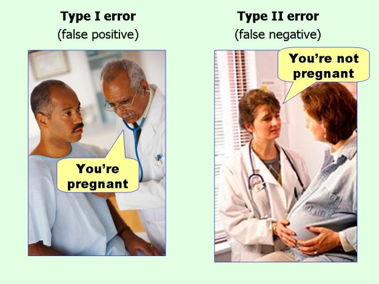

Stat 2060
Introduction of Probability and Statistics
Instructor: Lisa Ling
Office: Chase building, room 307
Email: lisaling@dal.ca
Introduction to Probability and Statistics
- Textbook: Probability and Statistics for Engineering and the Sciences by J. Devore
- Homework: There will be a total of 8 online assignments. Assignments are done online using the EWA system.
Here is EWA registration instruction.
- Location: KENNETH C ROWE MANAG 1020
- Exams: There will be 1 midterm and 1 final exam.
- Midterm: Thursday, June 9 (in class)
- Final exam: Thursday, June 23 (in class)
- Office Hours: MW 17:00-17:55
- Time: MTWR 18:05-20:45
- Outline: Course outline
- Calendar: Course calendar
- Notes: Reference Notes from Penn State.
- Statistical Tables: tables
Announcement
-
You must purchase either a hard copy of the text ($204.95, ISBN 1305933494) or an electronic version ($73.95, ISBN 1285858042).
The hard copy must be purchased at the bookstore in order to get access to the EWA online assignments.
The electronic version can be purchased at the bookstore or Nelsonbrain
online.
A copy of the textbook is on two-hour reserve at Killam Library.
The exams will be closed-book and will be similar as sample exams.
Below are the links for sample midterm and final exam.
Welcome to statistical world

Insteresting visualization